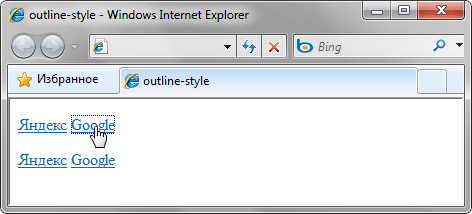

outline-style
Устанавливает стиль внешней границы элемента. В отличие от линии, задаваемой через border, линия через outline отображается вокруг элемента, не влияя на ширину блока или его положение.
Краткая информация
| Значение по умолчанию | none |
|---|---|
| Наследуется | Нет |
| Применяется | Ко всем элементам |
Синтаксис
outline-style: none | dotted | dashed | solid | double | groove | ridge | inset | outsetЗначения
- none
- Граница не отображается. Это значение перекрывает свойство outline-width, если оно присутствует.
- dotted
- Линия состоящая из набора точек.
- dashed
- Пунктирная линия, состоящая из серии коротких отрезков.
- solid
- Сплошная линия.
- double
- Двойная линия.
- groove
- Создаёт эффект вдавленной рамки.
- ridge
- Создаёт эффект рельефной границы.
- inset
- Псевдотрёхмерная рамка, при которой правая и нижняя граница осветляется, а левая и верхняя линии затемняются.
- outset
- Псевдотрёхмерная рамка, при которой левая и верхняя граница имеют более светлый оттенок, чем заданный цвет, а правая и нижняя линии затемняются.
Вид указанных стилей представлен на рис. 1.

Рис. 1. Вид границы с разным значением стилей
Пример
<!DOCTYPE html>
<html>
<head>
<meta charset="utf-8">
<title>outline-style</title>
<style>
.noborder a {
outline-style: none; /* Убираем границу вокруг ссылок */
}
</style>
</head>
<body>
<p><a href="http://ya.ru">Яндекс</a>
<a href="http://google.ru">Google</a></p>
<p class="noborder"><a href="http://ya.ru">Яндекс</a>
<a href="http://google.ru">Google</a></p>
</body>
</html>Результат примера показан на рис. 2. В данном примере для браузера IE8 убирается пунктирная граница вокруг ссылок, возникающая при их активации. В первом абзаце рамка ещё будет отображаться, а во втором абзаце она скрывается с помощью значения none свойства outline-style.

Рис. 2. Использование свойства outline-style для ссылок
Объектная модель
Объект.style.outlineStyle
Спецификация
| Спецификация | Статус |
|---|---|
| CSS Basic User Interface Module Level 3 | Рабочий проект |
| CSS Level 2 (Revision 1) | Рекомендация |
Браузеры
| Internet Explorer | Chrome | Opera | Safari | Firefox |
| 8 | 1 | 7 | 1.2 | 1.5 |
| Android | Firefox Mobile | Opera Mobile | Safari Mobile |
| 1 | 1.5 | 7 | 1.2 |